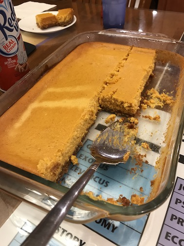

Ingredients:
Crust:
• 1 3/4 cups graham cracker crumbs
• 3 tablespoons light brown sugar
• 1/2 teaspoon ground cinnamon
• ~1 stick melted salted butter
Cake:
• 3 packages cream cheese, at room temperature
• 1 (15-ounce) can pureed pumpkin
• 3 eggs plus 1 egg yolk
• 1 1/2 cups sugar
• 1/2 teaspoon ground cinnamon
• 1/8 teaspoon fresh ground nutmeg
• 2 tablespoon all-purpose flour
• 1 teaspoon vanilla extract
Whipped Cream Topping:
• 2 cups heavy whipping cream
• 2 tablespoons of sugar
• 1 teaspoon cinnamon
Instructions:
First start with the crust. Crush up the graham crackers with a food processor, or by putting the crackers
in a bag and smashing it with your choice of utensil (this is my favorite part). Put this in a bowl with the
cinnamon, brown sugar and melted butter. If the mixture is still crumbly, add a bit more butter so it all
sticks together (you can never have too much butter). Take this mixture and line the entire bottom of the pan
with it. Use a cup or spoon to press it down flat into the pan.
Next we work on the cake filling. Make sure the cream cheese is at room temperature, as it will make stirring
the mixture much quicker and easier. Once the cream cheese is slightly melty and evenly mixed, add in the pumpkin
puree, eggs, sugar, and flour slowly, to make sure it all mixes together. Once you have a battery looking base, add
in the vanilla, cinnamon, and nutmeg, constantly mixing to make sure the spices evenly spread throughout the mixture.
Keep mixing until you have a nice even batter, and then slowly pour this over the crust. You will cook the Cheesecake
for around an hour at 350, but in my experience it usually takes a little longer to firm up.
Once you get the cake in the oven, you can make a quick whipped cream topping. Simply put the sugar and heavy whipping
cream in a bowl, and mix thoroughly with a whisk or electric mixer until fluffy. After that just mix the cinnamon in
slowly so it doesn't become concentrated in one place.
Once it looks slightly brown on top, put the cheesecake in the fridge for at least four hours to let it cool off. Once
it is cool, simply add the whipped cream topping and enjoy!